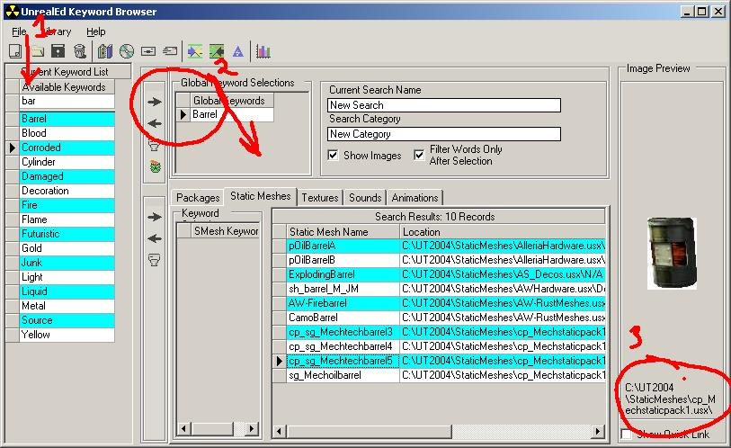

Mesh Browser Project
Current project to create a browser for static meshes.
See also the list of Static Mesh Packages and the Static Mesh Package/Index.
This is an app for all the people that ask "How can I find a mesh or texture quickly?" or "Is there some kind of list of static meshes/textures I can look through?"
We all know that loading packages in UED's browser just to see what is in them really sucks. Really really sucks. It does not help matters when you realize that most packages (especially static meshes) are named according to their author, not necessarily their contents. odinfix is well on the way to solving this problem.
odinfix's UED keyword browser project
In a nutshell, this is a small application that is a database of all the default Texture and Static Mesh packages in Unreal Tournament 2004. It has keywords assigned to each mesh or texture, and has a search function. If you're looking for a static mesh to use as a pipe, you type in 'pipe' in the keyword browser, and it lists all the mesh names (and locations) that fit that description. You can add more than one keyword to further filter the results ('pipe' would return a LOT of meshes). If you're looking for a "rusty" texture, you do the same thing and see what the browser returns, etc. It supports thumbnail images, so you can scroll through and see a snapshot of the mesh.
Merely having thumbnails of each static mesh or texture puts this light years ahead of loading packages in UED just to look through them. With the ability to search by keyword, imagine how much time this saves. In my own experience, I don't even bother getting very specific with my searches...if I'm looking for a ramp, I'll put that into the browser and scroll through the thumbnails to find something I'd like to take a closer look at in UnrealEd. In the spirit of creativity, those working on keywording the meshes are trying to offer suggested uses for a mesh, beyond what the meshes were originally made for. The object is to think of what a specific mesh might be used for, not just identifying it. This might result in getting a lot of results for a particular keyword, but more is better in this case 

UnrealEd Keyword Browser by odinfix/Fixell Software Innovations |
- This is the main window. You can either browse through the available keywords, or type the word you want to search for.
- Like Ued's broswers, it begins to parse results as you type.
- Double-click the keyword you want, or use the arrows, and a list will be shown of all meshes that fit that description. You can add more keywords to narrow your search, or just click through the results. This particular example (with an incomplete database) tells me that there are 5 different packages that have a barrel static mesh in them.
- With "Show Images" selected, you'll see a thumbnail of the mesh, as well as where to find it.
- Note in the above example, I have already selected the keyword "barrel", and the keyword list is showing me the keywords also associated with meshes that have the "barrel" keyword attached...if I wanted to add "corroded" to the search, it's going to narrow the list to only meshes that have both keywords.
You can edit keywords yourself, or add packages and keywords for meshes that come with other maps. You can share your own database and merge someone else's database into yours quite easily. Even after there's a single databse posted, it is expected that users will modify or edit it, refine keywords, etc. and then share with others. It's a pretty powerful tool, and very flexible for the future.
see [this thread on 3DBuzz] for the applications and more specific info.
UPDATE: We're done with Static Meshes...the database has every mesh keyworded, and all the thumbnails are done. The database will certainly need some refinement as people use it and make corrections/additions, but it's complete for default packages and it works.
Thumbnails should be done for textures already, but finishing that database will take a bit longer. In the meantime the 3DBuzz forum thread still has all the latest info.
Steven Horton has been kind enough to do a lot of work on the Static Mesh thumbnails, including hosting them on his website. If you want to make your own, read through the 3DBuzz thread linked above where he describes the process and get the map he uses as a "photo studio" of sorts.
There's a lot more to this application than what I have posted, and the instructions inside the app are better than what I have said here, but you should get the idea. odinfix will (I hope) be able to explain it better.
Discussion
Tarquin: what sort of space do you need, X-O? Plain text data is fine, and you could use the Static Mesh Package page as a starting point. Thumbnails for each mesh is a little more problematic: our image uploader is slow and we're not really suited to image-intensive stuff. But you can embed external images 
X-0: I believe that the problem of holding all the necessary files is being taken care of, but this page should be useful in either letting people know the project exists or showing them what it is and does.
X-0: Hey! This is pretty easy! Thanks Tarquin 
Tarquin: np 
Olorin: ehr.. any way to open up a texture package and read its content at run-time? I'm thinking, instead of using this big database (which needs to be maintained), to have a similar app that you can kick off giving it a folder name (or a single texture package name). The app would open the texture package (or packages in the folder) and dynamically create a snapshot and the other info for you. Is this doeabl or is the formate of the texture packages proprietary or too hard to make sense of?
Foxpaw: Most of that is theoretically doable, but the keyword information would not be stored in actual Unreal packages, so you would still need a database.
EricBlade: Not sure how old this page is, but I'd love to see something like this.. Particularly with the ability to at least create a basic index of other USX/UTX packages, as I'm not using UTxxxx .. but it would still be very handy!
Tgusagalpa: This whole thing is dead because the download files don't go any where. Delete Me ?